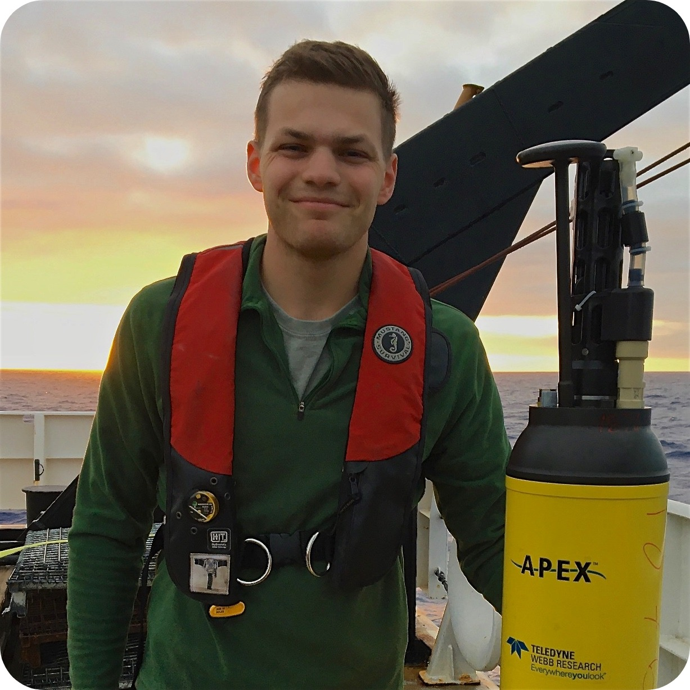

I am an oceanographer and NOAA Climate & Global Change postdoctoral fellow with Georgy Manucharyan at UW and Andy Thompson at Caltech. I received my Ph.D. in physical oceanography at Scripps Institution of Oceanography working with Lynne Talley and Sarah Gille. My research uses a combination of observations, numerical models, and remote sensing to investigate the role of the ocean in the climate system. I am particularly interested in Southern Ocean dynamics, including ice-ocean interactions, air-sea fluxes, physical controls on biogeochemistry, large-scale circulation, and submesoscale variability.
I am also very passionate about communicating climate science to the general public. As an undergraduate, I interned at the NYC Mayor's Office of Sustainability helping design public education campaigns on issues related to energy efficiency, and served as content manager for a popular science blog called the Columbia Science Review. I have written for several publications and blogs aimed at general audiences, and was a member of the 2019 cohort of AGU Voices for Science Advocates.